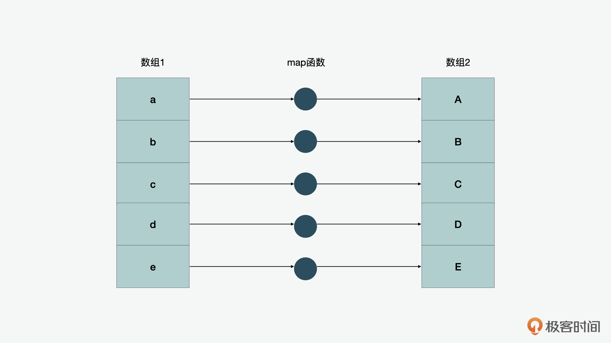
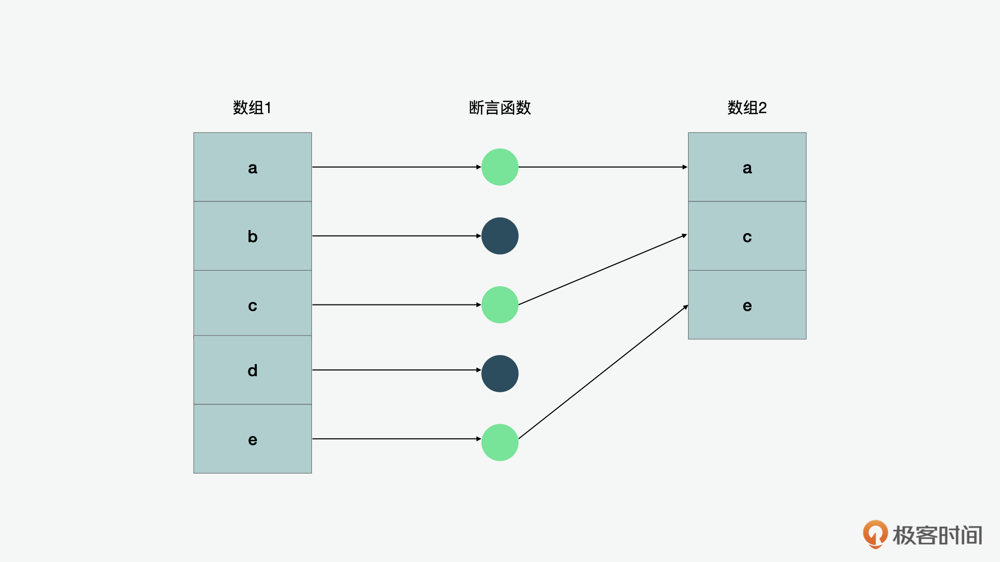
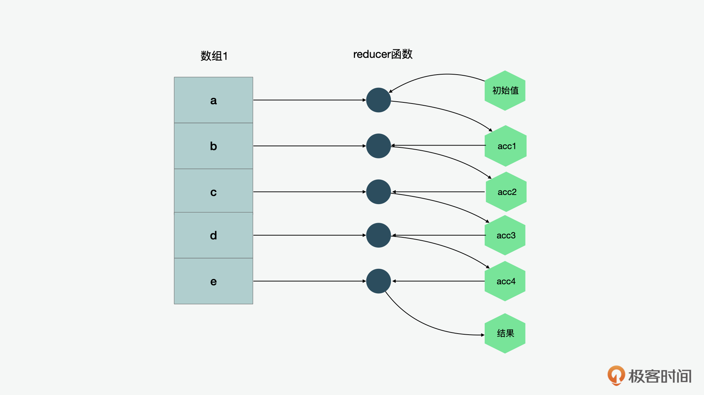

- 00 开篇词 JavaScript的进阶之路.md.html
- 01 函数式vs.面向对象：响应未知和不确定.md.html
- 02 如何通过闭包对象管理程序中状态的变化？.md.html
- 03 如何通过部分应用和柯里化让函数具象化？.md.html
- 04 如何通过组合、管道和reducer让函数抽象化？.md.html
- 05 map、reduce和monad如何围绕值进行操作？.md.html
- 06 如何通过模块化、异步和观察做到动态加载？.md.html
- 07 深入理解对象的私有和静态属性.md.html
- 08 深入理解继承、Delegation和组合.md.html
- 09 面向对象：通过词法作用域和调用点理解this绑定.md.html
- 10 JS有哪8种数据类型，你需要注意什么？.md.html
- 11 通过JS引擎的堆栈了解闭包原理.md.html
- 12 JS语义分析该用迭代还是递归？.md.html
- 13 JS引擎如何实现数组的稳定排序？.md.html
- 14 通过SparkPlug深入了解调用栈.md.html
- 15 如何通过哈希查找JS对象内存地址？.md.html
- 16 为什么环形队列适合做Node数据流缓存？.md.html
- 17 如何通过链表做LRU_LFU缓存？.md.html
- 18 TurboFan如何用图做JS编译优化？.md.html
- 19 通过树和图看如何在无序中找到路径和秩序.md.html
- 20 算法思想：JS中分治、贪心、回溯和动态规划.md.html
- 21 创建型：为什么说Redux可以替代单例状态管理.md.html
- 22 结构型：Vue.js如何通过代理实现响应式编程.md.html
- 23 结构型：通过jQuery看结构型模式.md.html
- 24 行为型：通过观察者、迭代器模式看JS异步回调.md.html
- 25 行为型：模版、策略和状态模式有什么区别？.md.html
- 26 特殊型：前端有哪些处理加载和渲染的特殊“模式”？.md.html
- 27 性能：如何理解JavaScript中的并行、并发？（上）.md.html
- 28 性能：如何理解JavaScript中的并行、并发？（下）.md.html
- 29 性能：通过Orinoco、Jank Busters看垃圾回收.md.html
- 30 网络：从HTTP_1到HTTP_3，你都需要了解什么？.md.html
- 31 安全：JS代码和程序都需要注意哪些安全问题？.md.html
- 32 测试（一）：开发到重构中的测试.md.html
- 33 测试（二）：功能性测试.md.html
- 34 测试（三）：非功能性测试.md.html
- 35 静态类型检查：ESLint语法规则和代码风格的检查.md.html
- 36 Flow：通过Flow类看JS的类型检查.md.html
- 37 包管理和分发：通过NPM做包的管理和分发.md.html
- 38 编译和打包：通过Webpack、Babel做编译和打包.md.html
- 39 语法扩展：通过JSX来做语法扩展.md.html
- 40 Polyfill：通过Polyfill让浏览器提供原生支持.md.html
- 41 微前端：从MVC贫血模式到DDD充血模式.md.html
- 42 大前端：通过一云多端搭建跨PC_移动的平台应用.md.html
- 43 元编程：通过Proxies和Reflect赋能元编程.md.html
- 结束语 JavaScript的未来之路：源于一个以终为始的初心.md.html
- 捐赠
05 map、reduce和monad如何围绕值进行操作？
你好，我是石川。
上节课里，我们在学习组合和管道的工作机制的时候，第一次认识了reducer，同时在讲到transduce的时候，也接触到了map、filter和reduce这些概念。那么今天这节课，我们就通过JS中数组自带的功能方法，来进一步了解下transduce的原理，做到既知其然，又知其所以然。
另外，我们也看看由map作为functor可以引申出的monad的概念，看看它是如何让函数间更好地进行交互的。
数据的核心操作
那在正式开始之前，我先来说明下这节课你要关注的重点。课程中，我会先带你通过JavaScript本身自带的映射（map）、过滤（filter）和reduce方法，来了解下这几种方法对值的核心操作。同时呢，我也给你解答下上节课提出的问题，即如何通过映射和过滤来做到reduce。作为我们后面讲到functor和monad的基础。
好，下面我们就从map开始讲起。
map映射和函子
我们经常听说，array.map就是一个函子（functor），那什么是一个函子呢？
实际上，函子是一个带运算工具的数据类型或数据结构值。举个常用的例子，在JavaScript中，字符串（string）就是一个数据类型，而数组（array）既是一个数据类型也是一个数据结构，我们可以用字符串来表达一个单词或句子。而如果我们想让下图中的每个字母都变成大写，那么就是一个转换和映射的过程。

我们再用一段抽象的代码来表示一个字符串的映射函子stringMap。可以看到，stringMap可以把字符串Hello World!作为输入，然后通过一个uppercaseLetter工具函数的转换，对应返回大写的HELLO WORLD!。
stringMap( uppercaseLetter, "Hello World!" ); // HELLO WORLD!
类似地，如果我们有一个数组的映射函子arrayMap，也可以把数组 [“1”,“2”,“3”] 中每个字符串的元素转化成整数，然后再对应输出一个整数数组 [1, 2, 3]。
["1","2","3","4","5"].map( unary( parseInt ) ); // [1,2,3,4,5]
filter过滤和筛选
说完了函子，我们再来看看过滤器（filter）和断言（predicate）。
filter顾名思义，就是过滤的意思。但要注意一点，filter可以是双向的，我们可以过滤掉（filter out）不想要的东西，也可以筛选出（filter in）出想要的东西。
然后再来看断言。我们上节课在说到处理输入参数的工具的时候，也接触过断言，比如identity就可以看作是断言。在函数式编程中，断言就是一个个的筛选条件，所以在过滤器中，我们经常会使用断言函数。

举个例子，假如有一个用来判断“一个值是不是奇数”的isOdd函数，它是一个断言，而它的筛选条件就是筛选出数组中的单数。所以，如果用它来筛选 [1,2,3,4,5]，得到的结果就是 [1,3,5]。
[1,2,3,4,5].filter( isOdd ); // [1,3,5]
在Javascript中也有自带的 some() 和 every() 断言方法。它们的作用就是可以判断数组中的一组元素是不是都符合判断条件。
比如在下面一列包含了 [1,2,3,4,5] 这几个数字的数组中，如果我们要判断它的每一个元素是不是都小于6，结果就是true。如果我们要判断它们是不是都是奇数，结果就是false，因为这里面既有奇数，也有偶数。
let arr = [1,2,3,4,5];
arr.every(x => x < 6) // => true，所有的值都小于6
arr.every(x => x % 2 === 1) // => false，不是所有的数都是奇数
类似地，some()可以帮助我们判断这组数组中有没有一些小于6的数字或者奇数。这时，这两个判断返回的结果都是true。
let arr = [1,2,3,4,5];
arr.some(x => x < 6) // => true，a里面有小于6的数字
arr.some(x => x % 2 === 1) // => true，数组a里面有一些奇数
虽然some() 和 every() 都是 JavaScript自带的断言方法，但是对比 filter() ，它们就显得没有那么“函数式”了，因为它们的返回值只是一个 true 或 false，而没有像 filter 一样返回一组数据作为输出，继续用来进行后续一系列的函数式的操作。
reduce和缩减器
最后我们再来说说reduce。实际上，缩减（reduce）主要的作用就是把列表中的值合成一个值。如下图所示：

在reduce当中，有一个缩减器（reducer）函数和一个初始值。比如在下面的例子中，初始值是3，reducer函数会计算3乘以5的结果，再乘以10，得出的结果再乘以15，最后归为一个结果2250。
[5,10,15].reduce( (arr,val) => arr * val, 3 ); // 2250
而缩减reduce除了能独立来实现以外，也可以用映射map和过滤filter的方法来实现。这是因为 reduce的初始值可以是一个空数组[]，这样我们就可以把迭代的结果当成另一个数组了。
我们来看一个例子：
var half = v => v / 2;
[2,4,6,8,10].map( half ); // [1,2,3,4,5]
[2,4,6,8,10].reduce(
(list,v) => (
list.push( half( v ) ),
list
), []
); // [1,2,3,4,5]
var isEven = v => v % 2 == 0;
[1,2,3,4,5].filter( isEven ); // [2,4]
[1,2,3,4,5].reduce(
(list,v) => (
isEven( v ) ? list.push( v ) : undefined,
list
), []
); // [2,4]
可以发现，这里我故意利用了一个副作用。通过第一节课的学习，我们知道array.push是一个非纯函数的方法，它改变了原数组，而不是复制后修改。而如果我们想完全避免副作用，可以用concat。但是，我们也知道concat虽然遵循的是纯函数、不可变的原则，但是有一点是我们需要注意的，就是它在面对大量的复制和修改时会产生性能上的问题。所以估计到这里，你也猜到了在上节课中，我们提到的transducer的原理了。
是的，这里我们就是故意利用了副作用来提高性能！
你或许会认为，这样是不是就违背了纯函数和不可变的原则？实际上是也不是，因为在原则上，我们做的这些变化都是在函数内部的，而我在前面说过，需要注意的副作用一般多是来自外部。
所以在这个例子中，我们没有必要为了几乎没有负面影响的副作用而牺牲性能。而transducer正是利用了副作用，才做到的性能提升。
单子monad
好，现在让我们回到课程一开始提到的问题：monad和functor有什么区别呢？
在开篇词我们也提到过，函子（functor）其实就是一个值和围绕值的一些功能。所以我们知道，array.map可以被看做是一个functor，它有一组值，而如map这样的方法可以作用于数组里面的每一个值，提供了一个映射的功能。而monad就是在functor的基础上，又增加了一些特殊功能，其中最常见的就是 chain和应用函子（applicative)。下面我就带你具体看看。
array作为functor
前面我们说过，array.map就是一个函子，它有一个自带的包装对象，这个对象有类似map这样的映射功能。那么同样地，我们也可以自己写一个带有映射方法的Just Monad，用它来包装一个值（val）。这个时候，monad相当于是一个基于值形成的新的数据结构，这个数据结构里有map的方法函数。
function Just(val) {
return { map };
function map(fn) { return Just( fn( val ) ); }
}
可见，它的使用方式就类似于我们之前看到的array.map映射。比如在下面的例子里，我们用map将一个函数 v => v * 2 运用到了Just monad封装的值10上，它返回的就是20。
var A = Just( 10 );
var B = A.map( v => v * 2 ); // 20
chain作为bind、flatMap
再来说说chain。
chain通常又叫做flatMap或bind，它的作用是flatten或unwrap，也就是说它可以展开被Just封装的值val。你可以使用chain将一个函数作用到一个包装的值上，返回一个结果值。如下代码所示：
function Just(val) {
return { map, chain };
function map(fn) { return Just( fn( val ) ); }
// aka: bind, flatMap
function chain(fn) { return fn( val ); }
}
我再举个例子，我们用chain方法函数把一个加一的函数作为参数运用到monad A上，得到了一个 15+1=16 的结果，那么之后返回的就是一个flatten或unwrap展开的16了。
var A = Just( 15 );
var B = A.chain( v => v + 1 );
B; // 16
typeof B; // "number"
monoid
OK，既然说到了chain，我们也可以看一下monoid。
在上节课我们说过函数组合compostion。而在组合里，有一个概念就是签名一致性的问题。举个例子如果前一个函数返回了一个字符串，后一个函数接收的输入是数字，那么它们是没办法组合的。所以，compose函数接收的函数都要符合一致性的 fn :: v -> v 函数签名，也就是说函数接收的参数和返回的值类型要一样。
那么，满足这些类型签名的函数就组成了 monoid。看到这个公式你是不是觉得很眼熟？没错，它的概念就是基于我们之前说到过的 identity函数。在TypeScript中，identity也是泛型使用中的一个例子。比如在C#和Java这样的语言中，泛型可以用来创建可重用的组件，一个组件可以支持多种类型的数据。 这样用户就可以以自己的数据类型来使用组件。它的基本原理也是基于这样的一个identity函数。
function identity<T>(arg: T): T {
return arg;
}
identity在monad中有一个用处，就是如果把identity作为一个参数，可以起到观察inspect的作用。比如，我们先用Just来封装 15 这个值，然后调用chain的方法时，把identity作为参数，返回的就是一个flatten或unwrap展开的15。所以我们可以看出，它也这里也起到了一个log的作用。
var A = Just( 15 );
A.chain (identity) // 返回 15
applicative
最后，我们再来看应用函子（applicative），简称ap。
ap的作用其实也很简单。应用函子，顾名思义，它的作用是可以把一个封装过的函数应用到一个包装过的值上。
function Just(val) {
return { map, ap };
function map(fn) { return Just( fn( val ) ); }
function ap(anotherMonad) { return anotherMonad.map( val ); }
}
再来看一个例子，可以看到，ap把monad B里的值取出来，通过monad A的映射把它应用到了monad A上。因为映射接受的值类型是函数，所以这里我们传入的是柯里化的add函数，它先通过闭包的记忆功能，记住第一个参数6，之后再加上传入的10，最后输出的结果就是16。
var A = Just( 6 );
var B = Just( 10 );
function add(x,y) { return x + y; }
var C = A.map( curry( add ) ).ap( B );
C.chain(identity); // 返回 16
如果我们把上面几个功能加在一起，其大致实现就如下所示：
function Just(val) {
return { map, chain, ap, log };
// *********************
function map(fn) { return Just( fn( val ) ); }
// aka: bind, flatMap
function chain(fn) { return fn( val ); }
function ap(anotherMonad) { return anotherMonad.map( val ); }
function log() {
return `simpleMonad(${ val })`;
}
}
说到函子和应用函子，我们也可以看一下，在数组中，有一个array.of的工厂方法，它的作用是接收一组参数，形成一个新数组。
var arr = Array.of(1,2,3,4,5); // 返回：[1,2,3,4,5]
在函数式编程中，我们称实现了of工厂方法的函子是pointed函子。通过pointed函子，我们可以把一组值放到了一个数组的容器中，之后还可以通过映射函子对每个值做映射。而应用函子，（applicative functor）就是实现了应用方法的pointed函子。
总结
今天这节课，我们学习了函数式编程中针对数组的几个核心操作，解答了上节课中的如何通过映射和过滤做到reduce的问题，同时也更深入地理解了reducer和transduce的原理。
并且现在我们知道，array.map其实就是一个functor，它包含了map功能，可以围绕一个数组中的每个值进行操作，返回一个新的数组。而monad可以说是基于函子增加了一些特殊的功能。当然了，不同的monad也可以相互组合，比如just加上nothing，也就是一个空值单子，可以组成maybe monad来处理空值的异常。
另外说到了函子和单子，在函数式编程当中其实还有either、IO之类的概念。其中either是用来代替比如if else或者是try catch的条件运算，它的value里保存的是一个值；而IO可以用来延迟函数的执行，它的value里面存储的是一个函数。这里我就不多说了，感兴趣的话，你也可以去深入了解下。
思考题
从函数式编程的思维视角来看，你觉得JavaScript中的promise算是monad吗？
欢迎在留言区分享你的思考和答案，也欢迎你把今天的内容分享给更多的朋友。
© 2019 - 2023 Liangliang Lee. Powered by gin and hexo-theme-book.